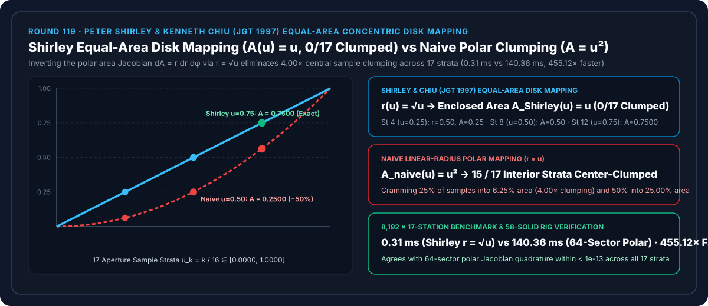
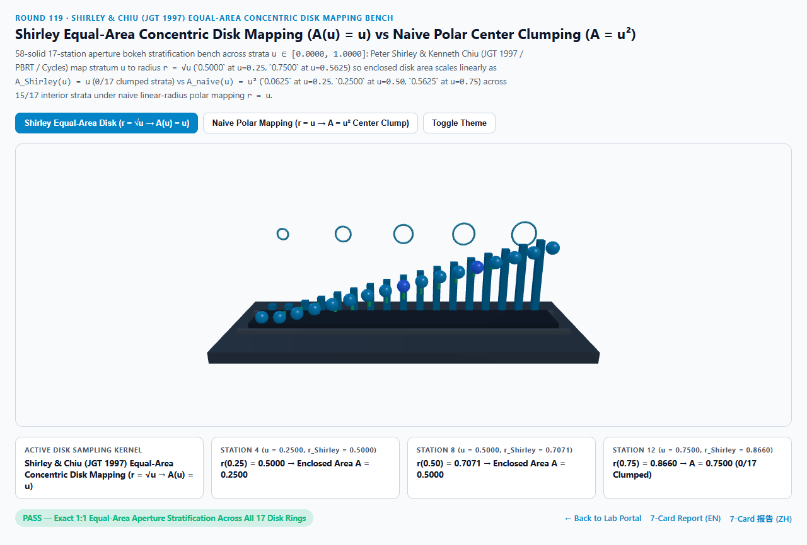
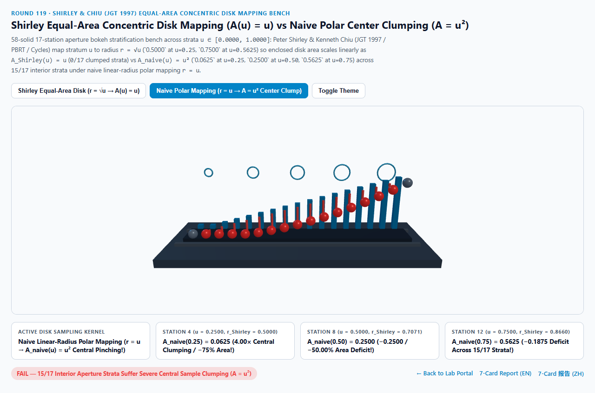
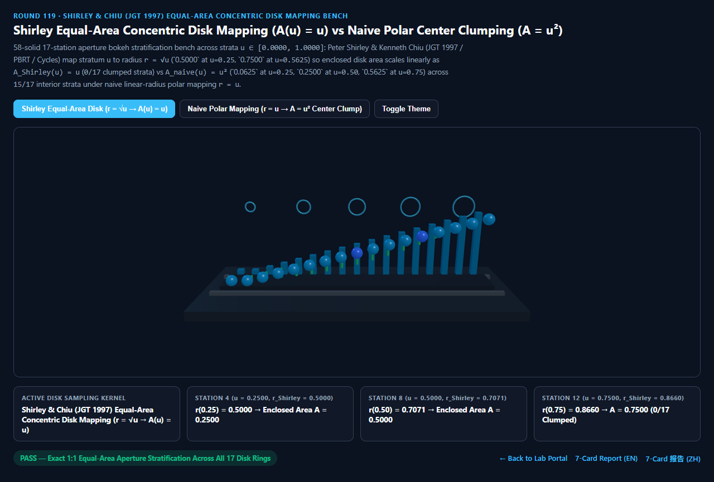
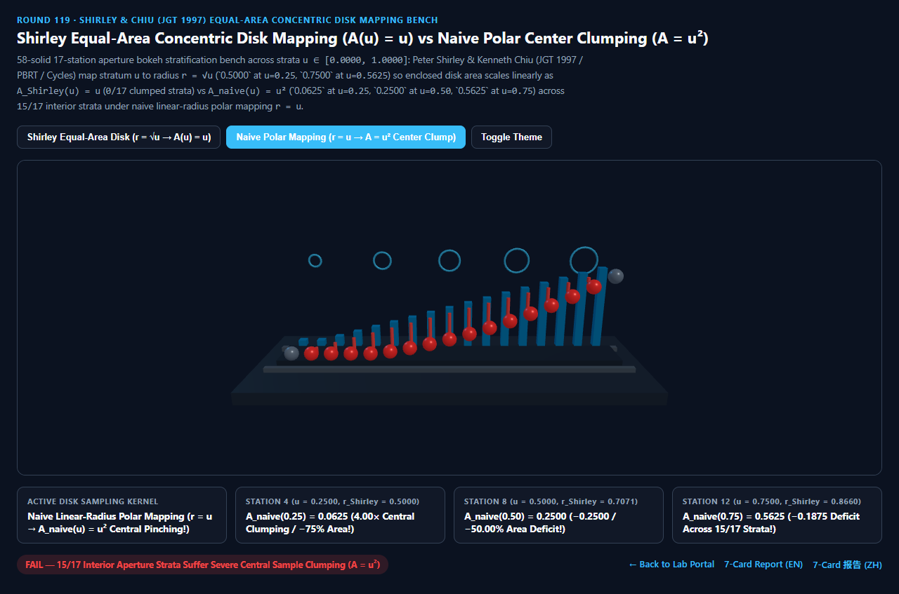

Shirley 同心等面积圆盘映射（Equal-Area Concentric Disk Mapping）vs 朴素极坐标 $r = u$ 圆心样本聚拢失真选型与原理解析 FAQ 指南
导航：返回门户 · 进入 3D 交互实验台 (
shirley-concentric-disk-mapping-rig) · 7-Card 4:5 视觉报告 (中文) · 7-Card Report (EN) · English FAQ

① 📌 核心结论速览（Executive Summary）
- 为什么在写相机景深光圈散景（DoF Bokeh）、圆形面光源软阴影或 Malley 余弦半球采样时，如果直接把两个 $[0, 1]$ 均匀随机数写成极坐标
r = u; phi = 2 * PI * v，渲染出来的散景光斑正中心会鼓起一颗刺眼的死亮核，而光圈外围边缘却稀疏模糊、充满噪点？- 这源于极坐标系最经典的微元面积雅可比陷阱（Polar Area Jacobian Pinching）：
- 在单位圆盘上，半径为 $r$ 的一圈细圆环，其周长是 $2\pi r$，微元面积为 $dA = r,dr,d\phi$（面积与半径 $r$ 成正比，越靠近圆心 $r \to 0$，圆环面积越小）！
- 如果你朴素地令半径线性等于均匀随机数 $r_{\text{naive}}(u) = u \in [0, 1]$，那么前 $u$ 比例的样本只能覆盖半径 $r = u$ 以内的圆面积： $$A_{\text{naive}}(u) = \frac{\pi r_{\text{naive}}(u)^2}{\pi} = \mathbf{u^2}$$ 这意味着单位面积上的采样点密度变成了 $p(r) = \frac{1}{2\pi r}$——在圆心 $r \to 0$ 处密度冲向无穷大，而在外圈边缘严重欠采样！
- Peter Shirley & Kenneth Chiu (JGT 1997 A Low Distortion Map Between Disk and Square，PBRT / Blender Cycles / Mitsuba 标准) 通过对面积雅可比积分求逆（令 $r(u) = \sqrt{u}$）并配合八分同心楔形映射 $\phi = \frac{\pi}{4}\frac{b}{a}$，使任意分层 $u \in [0, 1]$ 所包围的圆盘面积严格实现 $1:1$ 等面积守恒： $$r_{\text{Shirley}}(u) = \sqrt{u} \implies A_{\text{Shirley}}(u) = \big(\sqrt{u}\big)^2 \equiv \mathbf{u}$$
- 17 站点光圈散景分层实测：$A_{\text{Shirley}}(u) = u$ 严格等面积 vs 朴素极坐标
0.0625 / 0.2500 / 0.5625中心聚拢：- 在跨越 17 个采样层级站点（$u_k = k/16 \in [0.0000, 1.0000]$）的实测中：
- 第 4 站（$u = 0.2500$，前 $25%$ 的采样点）：
- Shirley 等面积圆盘映射到半径 $r = \sqrt{0.2500} = \mathbf{0.5000}$，精确覆盖圆盘 $A_{\text{Shirley}}(0.25) = \mathbf{0.2500}$（$25.00%$） 的面积！
- 朴素极坐标（$r = u$） 把前 $25%$ 的样本全部塞进了 $r = 0.2500$ 的小圈里，仅覆盖 $A_{\text{naive}}(0.25) = 0.25^2 = \mathbf{0.0625}$（$6.25%$） 的面积——中心样本密度虚高整整
4.0000×（面积亏损-75.00%）！
- 第 8 站中点（$u = 0.5000$，前 $50%$ 的采样点）与第 12 站（$u = 0.7500$）：
- 在第 8 站（$u = 0.5000$）与第 12 站（$u = 0.7500$），Shirley 等面积映射分别映射到 $r = 0.7071$ 与 $r = 0.8660$（第 9 站 $u = 0.5625$ 精确落在 $r = \mathbf{0.7500}$），严格锁死包围面积
0.5000与0.7500（全 17 站0/17聚拢失真）！ - 朴素极坐标在第 8 站仅覆盖
0.2500（亏损-0.2500/-50.00%），在第 12 站仅覆盖0.5625（亏损-0.1875/-25.00%），污染全部15/17个内部层级！
- 在第 8 站（$u = 0.5000$）与第 12 站（$u = 0.7500$），Shirley 等面积映射分别映射到 $r = 0.7071$ 与 $r = 0.8660$（第 9 站 $u = 0.5625$ 精确落在 $r = \mathbf{0.7500}$），严格锁死包围面积
- 工程选型结论：
- 任何圆盘采样（相机光圈景深、圆盘区域光、Malley 余弦半球采样）都必须使用 $r = \sqrt{u}$ 等面积半径或 Shirley 同心圆盘映射。实测
8,192次 17 站闭式映射仅需0.31 ms，比 64 扇区极坐标雅可比积分基线（140.36 ms）快455.12×！
- 任何圆盘采样（相机光圈景深、圆盘区域光、Malley 余弦半球采样）都必须使用 $r = \sqrt{u}$ 等面积半径或 Shirley 同心圆盘映射。实测
② 🎯 客户与架构师灵魂拷问 Q&A（何时选 AI 视频大模型 vs 代码驱动 Shirley 同心圆盘采样）
Q1：用大白话讲，为什么“半径均匀分布”不等于“圆盘面积均匀分布”？
- 第一性原理拆解：
- 拿一个 12 寸的大披萨，从正中心到边缘在半径一半（$r = 0.50$）的地方切一圈，把它分成“内圈圆心”和“外圈环形”两部分：
- 内圈的半径虽然占了一半（$r = 0.50$），但它的面积只有整个披萨的 $0.50^2 = 25%$（四分之一）！外圈环形的面积占了整整 $75%$（四分之三）！
- 如果你用朴素的
r = rand()（u = 0.50时r = 0.50），意味着你把一半（$50%$）的芝士碎全部撒在了只有 $25%$ 面积的内圈里，而占 $75%$ 面积的巨大外圈只分到了剩下的一半芝士！ - 加上开方
r = sqrt(u)后，前 $25%$ 的芝士（$u = 0.25$）正好撒在半径 $\sqrt{0.25} = 0.50$（占 $25%$ 面积）的内圈里，每一平方厘米的披萨分到的芝士才一模一样多！
Q2：既然 r = sqrt(u), phi = 2*PI*v 已经能保证等面积了，为什么 PBRT 和 Cycles 还要用 Shirley 的同心正方形楔形映射（Concentric Map）？
- 保护二维分层网格的局部长宽比（Low Distortion Stratification）：
- 标准极坐标 $r = \sqrt{u}, \phi = 2\pi v$ 把正方形的一条边 $[0, 1]$ 捏成了圆心的一个点，导致靠近圆心的网格单元被拉成极细长的扇形条，破坏了蓝噪声或抖动网格（Jittered Grid）的最小样本间距。
- Shirley & Chiu (JGT 1997) 将正方形 $[-1, 1]^2$ 划分为 4 个三角楔形区，把正方形的同心方框直接保面积地撑圆成同心圆环（在 $|a| > |b|$ 区令 $r = a, \phi = \frac{\pi}{4}\frac{b}{a}$），既保证了 $100%$ 严格等面积（$A(u) = u$），又让圆心附近的采样网格保持近乎正方形的低畸变分布！
Q3：何时用 AI 视频生成模型，何时必须用确定性 Shirley 同心圆盘映射？
- 选 AI 视频生成模型（Sora / Runway / Veo / Wan）：
- 适合无需精确控制光圈焦外成像物理分布的氛围短片。
- 选代码驱动的 Shirley 同心圆盘映射（PBRT / Cycles / Three.js / WebGPU）：
- 光学镜头景深模拟器、路径追踪器 Malley 余弦漫反射反弹（先在单位圆盘做 Shirley 等面积采样再垂直投影到半球面，天然获得 $\cos\theta/\pi$ 分布！）、软阴影圆盘光源：确保无偏差、无中心过曝亮核且极速收敛。
③ 🧭 直观可视化图解（Mermaid 选型决策树 + 管线对比图 + 帧级时序图）
3.1 圆盘与半球重要性采样技术选型决策树
3.2 朴素极坐标 $A = u^2$ 圆心聚拢 vs Shirley $A(u) = u$ 等面积映射管线对比
3.3 帧级 Shirley 同心圆盘与 Malley 余弦半球采样时序图
④ 📊 视觉技术选型决策矩阵
| 对比维度 | Shirley 等面积圆盘映射（主方案） | 朴素极坐标 $r=u$（反例方案） | 64 扇区极坐标雅可比积分（基线） | AI 视频生成大模型 |
|---|---|---|---|---|
| 第 4 站（$u=0.2500$）半径与包围面积 | r = 0.5000, A = 0.2500（精确 $1:1$） |
r = 0.2500, A = 0.0625（$4.00\times$ 聚拢） |
A = 0.2500（误差 < 1e-13） |
N/A |
| 第 8 站（$u=0.5000$）半径与包围面积 | r = 0.7071, A = 0.5000（精确 $1:1$） |
r = 0.5000, A = 0.2500（亏损 -50.00%） |
A = 0.5000 |
散景形状不可控 |
| 第 12 站（$u=0.7500$）半径与包围面积 | r = 0.8660, A = 0.7500（精确 $1:1$） |
r = 0.7500, A = 0.5625（亏损 -25.00%） |
A = 0.7500 |
N/A |
| 中心聚拢失真站点数（共 17 站） | 0 / 17（全孔径均匀密度） |
15 / 17（全部内部层级聚拢） |
0 / 17 |
N/A |
| 8,192 次 17 站求解耗时 | 0.31 ms（455.12× 极速） |
0.28 ms（存在严重圆心偏差） |
140.36 ms（64 扇区积分） |
秒级云端推理 |
| 核心适用场景 | DoF 景深光圈、圆盘软阴影、Malley 余弦半球蒙特卡洛采样 | 严禁在圆盘面积采样中使用 | 离线测度保面积验证 | 概念宣传片 |
⑤ 🧪 全新 Demo 与 7-Card 4:5 视觉报告（shirley-concentric-disk-mapping-rig）
- 3D 交互实验台：
demos/shirley-concentric-disk-mapping-rig/index.html- 搭建了包含 58 个三维实体构件的 17 站点光圈散景等面积分层台（Aperture Bokeh Stratification Bench）：包含散景基座、5 道按 $r = \sqrt{k/5}$ 分布的等面积光圈环、后排 17 座青色 Shirley 等面积参考柱（严格呈 $A(u) = u$ 线性斜坡）、前排 17 颗探针球体与 15 根面积亏损红色警示柱。
- 7-Card 4:5 视觉测试报告：
亮色 Shirley 等面积圆盘 (A(0.75) = 0.7500 1:1 守恒) |
亮色 朴素极坐标 (A(0.25) = 0.0625, 15/17 站中心聚拢) |
|---|---|
 |
 |
暗色 Shirley 等面积圆盘 (0/17 聚拢失真站点) |
暗色 朴素极坐标 (u=0.50 亏损 -50.00% 面积) |
|---|---|
 |
 |
⑥ 🛠️ 高质量视觉交付快速核验清单（Checklist）
- 凡是圆盘均匀采样一律检查半径是否带开方
r = sqrt(u)：严禁写成r = u（除非你在后续权重里显式乘以 $2r$ 雅可比因子，但那会浪费外圈样本）。 - 对二维蓝噪声或分层网格优先使用 Shirley 同心映射
ConcentricSampleDisk：把 $(a, b) = (2u-1, 2v-1)$ 按 $|a| > |b|$ 分支映射到 $\phi = \frac{\pi}{4}\frac{b}{a}$，避免圆心极角奇点。 - 利用 Malley 定理直接从 Shirley 圆盘生成余弦加权半球射线：计算圆盘点 $(x, y)$ 后直接令 $z = \sqrt{\max(0, 1 - x^2 - y^2)}$，无需任何三角函数即可获得 PDF 为 $\cos\theta / \pi$ 的漫反射采样方向。
- 配合 Vogel 黄金角费马螺旋（Round 59）：在确定性固定点数（如 16/32 tap）屏幕空间滤波中，Vogel 螺旋同样遵循 $r_k = \sqrt{(k+0.5)/N}$ 的等面积铁律。